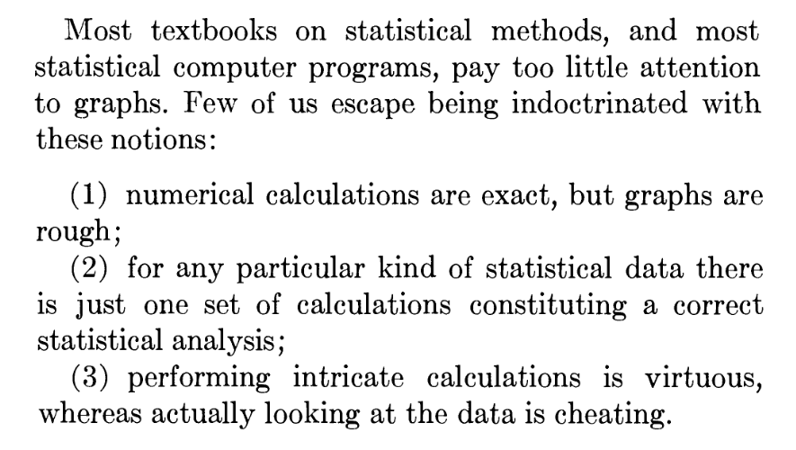

3. Exploratory Data Analysis
Code
 Demo Notebook
Demo Notebook Demo Data
Demo DataSlides
 PDF Slides
PDF Slides HTML Slides
HTML SlidesTopic overview
- Exploratory data analysis (EDA)
- Splitting your data
Resources used: - Feat.Engineering Chapter 3 - R for Data Science (2e), Chapter 10 - Hands on Machine Learning with Scikit-Learn and Tensorflow/PyTorch, Chapter 2. Available at MRU Library
Exploratory data analysis
The goal of EDA is to Understand your data
- Ask questions (e.g. do my data fit the linear model assumptions?)
- Look for answers (e.g. by making histograms)
- Find more questions and return to step 1 (hmm, those are some weird numbers, what do these values represent?)
EDA is not a formal process with a strict set of rules. More than anything, EDA is a state of mind. During the initial phases of EDA you should feel free to investigate every idea that occurs to you. Some of these ideas will pan out, and some will be dead ends. — Hadley Wickham
Basic things to look at
- Data source - File? Database? API?
- Structured/unstructured
- Assumption 1: relatively small (fits in memory) tabular dataset
- Data types - numeric/categorical, text, other
- Assumption 2: numeric data
- Ranges
- Summary statistics
- Missing values
- Next week: categorical data, after reading week unstructured
Example: Anscombe’s Quartet
- Very small dataset, constructed by hand in 1973 by Francis Anscombe

- Not known exactly how he made it, but Drs. Roberta La Haye and Peter Zizler proposed a compelling argument for linear algebra
Case Study: Data visualization to the rescue
- A 2012 study about honesty reported that “Signing at the beginning makes ethics salient and decreases dishonest self-reports in comparison to signing at the end”
- In 2020, the authors published a new paper admitting that their original results could not be replicated, and noticed an anomaly in the summary statistics
- The 2020 paper also published the original data, which was downloaded and visualized by a team of anonymous researchers working with Data Colada
- This led to the 2012 paper being retracted, a $25M lawsuit, a data-driven defense
Moral of the story is, look at your data!
Useful starting points
Assuming your data is small enough and well structured:
pandas.DataFrame.info: data type, number of non-null, names, dimensionspandas.DataFrame.head: return the firstnrows (default 5). Alsotail.pandas.DataFrame.describe: Compute a bunch of summary statistics- Various aggregation statistics
Next up, visualize!
Types of exploratory visualizations
- I will not provide an exhaustive list of visualizations!
- Pandas provides a handy wrapper around matplotlib
- So does Seaborn - check out the example gallery
- Some of my favourites:
- Histograms
- Scatter plots/hexbin plots
- Box plots/violin plots
- But before we get too deep into EDA, it’s time to split your data
Why split your data?

- We need to set aside a final test set to evaluate our final model
- Humans are great at detecting patterns!
- Even looking at test data could influence decisions, causing data leakage
When to split your data
How much EDA should you do before splitting? You might need to know: * Are there any missing values? * Is there a need for stratified sampling? * Do the data have a unique identifier beyond the row label? * As soon as you have a general sense of the: - Data types - Missing features - Distributions, particularly categorical * It’s time to split the data!
How to split your data
As usual, it depends on the: * Data set size \(n\) * Relationship between number of predictors \(p\) and \(n\) * Nature of the data: - Time series? - Stratification needed? * Intended validation approach
Side note: validation

- We also need validation data
- If the dataset is sufficiently large, this can be a separate split
- In lab 2 and assignment 1 I asked you to use cross-validation
Validation
- Validation data is used to make decisions about your model, e.g.
- Model selection
- Tuning hyperparameters
- Monitor training progress
- However, validation data is not used to directly train a model
- Think of it like a test-adjacent set where you can repeatedly try stuff on your training set, then evaluate on validation
Cross-validation is a way of checking your model choice and parameters, but final training should be done on the entire training set
How to split your data
- Simple scenario: random sample (typically 70-80% for training)
- Only works if:
- Stratification doesn’t matter
- Data is guaranteed not to change (later topic)
- Data is not a time-series (later topic)
How do we know if stratification is necessary?
Sampling bias
Stratification is used to mitigate sampling bias
- Cilantro example: assume 80% of population likes cilantro
- Goal: ensure our sample is representative of the population, \(\pm 5\%\)
The binomial distribution can be used to model the probability of choosing \(k\) people who like cilantro from \(n\) total participants:
\[P(X = k) = \binom{n}{k}p^k(1-p)^{n-k}, \mathrm{where} \binom{n}{k} = \frac{n!}{k!(n-k)!}\]
Sampling bias continued
\(P(X = k)\) is the probability mass function, and the corresponding cumulative distribution function is just the sum up to \(k\):
\[P(X \leq k) = \sum_{i=0}^k \binom{n}{i}p^i(1-p)^{n-i}\]
Suppose we randomly sample 100 people. What is the probability of fewer than 75 or more than 85 cilantro lovers?
Here we’ve defined an “unbiased sample” as being \(\pm5\%\)
Stratification approach
The need for stratification depends on sample size, distribution of stratification category, and how much bias you’re willing to accept | | Small Sample Size | Large Sample Size | | –| – | – | | Unbalanced Classes | Stratify | Maybe | | Balanced Classes | Maybe | Not necessary |
Stratification categories can be the target variable, or a predictor
Goal is to have the same class distribution in both testing and training
Repeatable randomness
- At minimum, you should always set a random seed so that every time you sample your data it is the same “random sample”
- This isn’t enough if your data might get updated! You can:
- Store the IDs of your split offline, then sample any new data and append to them (ensuring that test/train never mix)
- Get fancy with a deterministic method like hashing features to create unique IDs, then thresholding based on maximum possible value
- More on fancy sampling later in the semester
Back to visualizations
Now that we’ve got a test set safely stashed, we can ask questions about the data and use visualizations and statistics to answer them. Some examples: * Do any of my features seem to be related to my target? * Do any of my features seem to be related to each other? * Why are some values more common than others? * Do these values make sense in the context of my domain knowledge? * If I group my data together in some way, are there clear trends?
Some handy tricks
A few things to tweak that can make visualizations easier to read:
- Histogram bin sizes
- Aiming for a smooth distribution that works for your data
- Transparency (
alpha)- Useful for both dense scatter plots and overlapping categories
- “Jitter”
- Mostly for scatter plot of continuous vs categorical data
- Add a tiny bit of random noise to spread out samples
Categorical data preview
- Samples can take on one of several discrete values or groups
- Nominal: no particular order to the groups
- Ordinal: groups relate to each other in a specific order
- Categories can be represented as strings or numeric types
- Domain knowledge is necessary!
Nominal categories: one-hot encoding
- Categories have no natural relationship
- Create \(k\) new features from \(k\) categories, very sparse matrix
| Animal | cat | dog | rabbit | |
|---|---|---|---|---|
| cat | → | 1 | 0 | 0 |
| dog | → | 0 | 1 | 0 |
| rabbit | → | 0 | 0 | 1 |
Coming up next
- Assignment 1
- Categorical data
- Exploring
- Encoding strategies
- Dealing with missing values